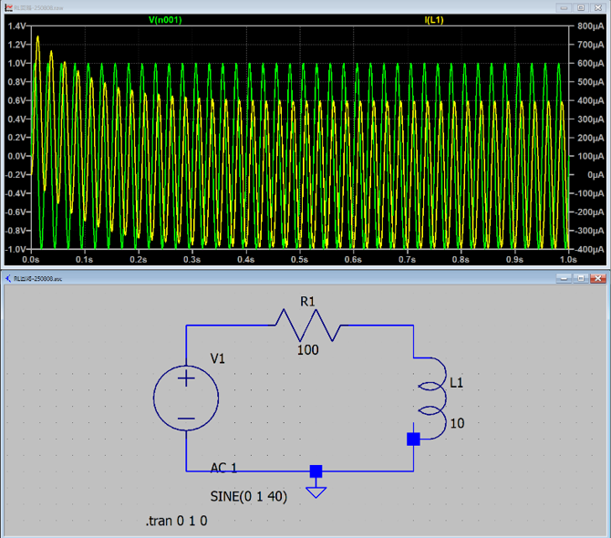
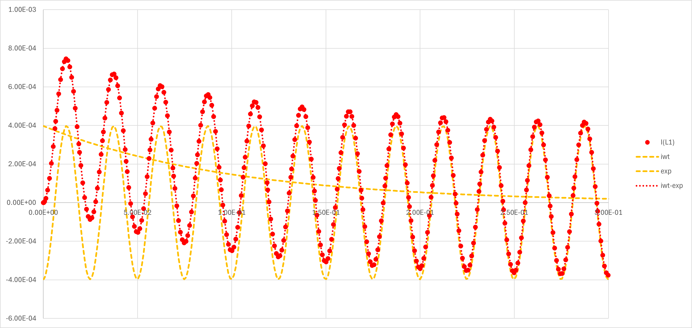

回路-10-2
RL直列回路を真面目に解く
RとLが直列に並んだ交流回路をまじめに考えます．式は，
\(\Large R \cdot I(t) + \displaystyle L \frac{d \ I(t)}{ dt} = V_0 \cdot e^{ j \omega t} \)
となるので，
\(\Large \displaystyle \frac{d \ I(t)}{dt} = - \frac{R}{ L} I(t) +\frac{V_0}{L} \cdot e^{ j \omega t} \)
定数変化法により，
\(\Large \displaystyle I(t) = A_0 \cdot e^{- \frac{R}{ L} t} \)
\(\Large \displaystyle \frac{d \ I(t)}{dt} = A_0' \cdot e^{- \frac{R}{ L} t} \color{blue}{- \frac{R}{ L} \cdot A_0 \cdot e^{- \frac{R}{ L} t}}\)
\(\Large \displaystyle = \color{blue}{- \frac{R}{ L} I(t)} +\frac{ V_0}{L} \cdot e^{ j \omega t} \)
\(\Large \displaystyle A_0' \cdot e^{- \frac{R}{ L} t} = \frac{ V_0}{L} \cdot e^{ j \omega t}\)
\(\Large \displaystyle A_0' = e^{ \frac{R}{ L} t} \cdot \frac{ V_0}{L} \cdot e^{ j \omega t}
=
\frac{ V_0}{L} \cdot e^{ (j \omega + \frac{R}{ L})t}\)
\(\Large \displaystyle A_0 = \frac{V_0 }{L} \cdot \frac{1}{j \omega + \frac{R}{ L}} \cdot e^{ (j \omega + \frac{R}{ L})t} + D\)
\(\Large \displaystyle I(t) = \left( \frac{ V_0}{L} \cdot \frac{1}{j \omega + \frac{R}{ L}} \cdot e^{ (j \omega + \frac{R}{ L})t} + D\right) \cdot e^{- \frac{R}{ L} t} \)
\(\Large \displaystyle = \frac{ V_0}{L} \cdot \frac{1}{j \omega + \frac{R}{ L}} \cdot e^{ j \omega t} + D \cdot e^{- \frac{R}{ L} t} \)
\(\Large \displaystyle I(0) = 0 \)
\(\Large \displaystyle I(0) = \frac{ V_0}{L} \cdot \frac{1}{j \omega + \frac{R}{ L}} \cdot e^{ j \omega \cdot 0 } + D \cdot e^{- \frac{R}{ L} \cdot 0} \)
\(\Large \displaystyle \frac{ V_0}{L} \cdot \frac{1}{j \omega + \frac{R}{ L}} + D =0 \)
\(\Large \displaystyle D = - \frac{ V_0}{L} \cdot \frac{1}{j \omega + \frac{R}{ L}} \)
\(\Large \displaystyle I(t) = \frac{ V_0}{L} \cdot \frac{1}{j \omega + \frac{R}{ L}} \cdot \left( e^{ j \omega t} - e^{- \frac{R}{ L} t} \right) \)
\(\Large \displaystyle I(t) = V_0 \cdot \frac{1}{R + j \omega L} \cdot \left( e^{ j \omega t} - e^{- \frac{R}{ L} t} \right) \)
\(\Large \displaystyle I(t) = V_0 \cdot \frac{R - j \omega L}{R^2 + (\omega L)^2 } \cdot \left( e^{ j \omega t} - e^{- \frac{R}{ L} t} \right) \)
\(\Large \displaystyle I(t) = V_0 \cdot \frac{R - j \omega L}{R^2 + (\omega L)^2 } \frac{\sqrt{R^2 + (\omega L)^2}}{\sqrt{R^2 + (\omega L)^2} }\cdot \left( e^{ j \omega t} - e^{- \frac{R}{ L} t} \right) \)
\(\Large \displaystyle I(t) = V_0 \cdot \frac{R - j \omega L}{\sqrt{R^2 + (\omega L)^2} } \frac{1}{\sqrt{R^2 + (\omega L)^2} }\cdot \left( e^{ j \omega t} - e^{- \frac{R}{ L} t} \right) \)
とし，最初の項を，複素平面で，

と考えると，
\(\Large cos \ (-\theta) = \displaystyle \frac{R }{\sqrt{R^2 + (\omega L)^2 }} \)
\(\Large j \ sin \ (-\theta) = - \frac{ \displaystyle j \omega L}{\sqrt{R^2 + (\omega L)^2 }} \)
となるので，
\(\Large \frac{R - j \omega L}{\sqrt{R^2 + (\omega L)^2 }} = cos \ (-\theta) - j \ sin \ (-\theta) = e^{-j \ \theta} \)
となります．ここで，
\(\Large tan (-\theta) = \displaystyle \frac{\omega L}{R} \)
です．したがって，電流は，
\(\Large \displaystyle I(t) = V_0 \cdot e^{ -j \theta} \cdot \frac{1}{\sqrt{R^2 + (\omega L)^2} }\cdot \left( e^{ j \omega t} - e^{- \frac{R}{ L} t} \right) \)
\(\Large \displaystyle = V_0 \cdot \frac{1}{\sqrt{R^2 + (\omega L)^2} }\cdot \left( e^{ j (\omega t - \theta)} - e^{ -j \theta} \cdot e^{- \frac{R}{ L} t} \right) \)
\(\Large \displaystyle = V_0 \cdot \frac{1}{\sqrt{R^2 + (\omega L)^2} }\cdot e^{ j (\omega t - \theta)} - V_0 \cdot \frac{1}{\sqrt{R^2 + (\omega L)^2} }\cdot e^{ -j \theta} \cdot e^{- \frac{R}{ L} t} \)
となります．ここで，三角関数に戻すために，虚数部分のみ取り出すと，
\(\Large \displaystyle Im [ I(t) ] = Im \left[V_0 \cdot \frac{1}{\sqrt{R^2 + (\omega L)^2} }\cdot e^{ j (\omega t - \theta)} \right]
- Im \left[V_0 \cdot \frac{1}{\sqrt{R^2 + (\omega L)^2} }\cdot e^{ -j \theta} \cdot e^{- \frac{R}{ L} t} \right] \)
\(\Large \displaystyle = V_0 \cdot \frac{1}{\sqrt{R^2 + (\omega L)^2} }\cdot sin (\omega t - \theta)
- V_0 \cdot \frac{1}{\sqrt{R^2 + (\omega L)^2} }\cdot sin\ \theta \cdot e^{- \frac{R}{ L} t} \)
十分な時間が経てば，第二項は0となるので，
\(\Large \displaystyle I(t) \sim V_0 \cdot \frac{1}{\sqrt{R^2 + (\omega L)^2} }\cdot sin (\omega t - \theta) \)
となり，インピーダンスを用いた結果と一致します．
実際に過渡現象のシミュレートしてみると，

となり，電流（黄色）が振動しながら徐々に変化して落ち着いていきます．最初の方を計算してみると，

赤点 ： LT-spiceで求めた過渡現象
黄色点線 ： 上記の式の第一項（三角関数）と第二項（指数）
赤点線 ： 黄色点線を足したもの
となります．ぴったり一致することがわかります．
次は，
です．